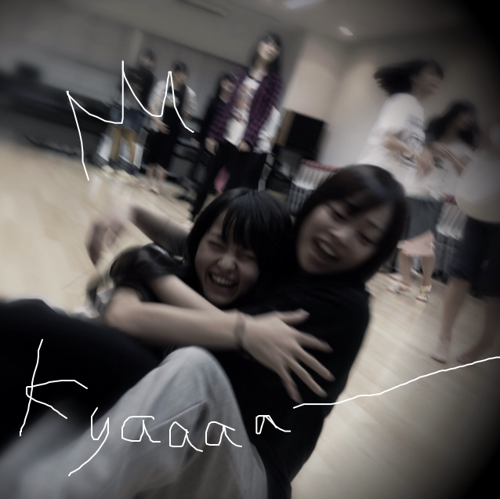
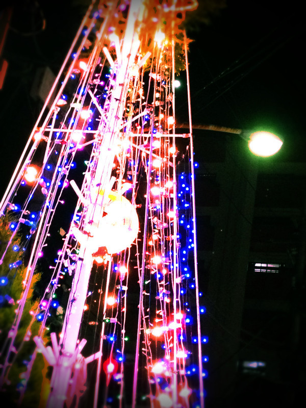

いつも読んでくださってる方、ありがとうございます***
いやぁ!!早いですね。
もう7回目です。
私、いつもパソコンで書いてるのですが
6回目の改行がめっちゃ読みにくかったですよね;
今日も楽しかったな♪
明日もがんばるぞぃ!!
あっ!きいてください!!
この前のDance Lessonでですね、
Tシャツとスウェパン(←スウェットパンツ笑)をですね、
いっつも持ってきてるのに
スウェパンを忘れちゃったんですよぉ!!!!!ぁ-ぁ
で、みんな代わりの持ってきてるかなぁって思って
みんなに聞いたんですけど、
やはり持ってきてなかったみたいで。
しょうがないからスカート履いてやるかって思ったときに
ねねころ(ねね)がやってきて.....聞いたら
「私服のでよければ貸すよ??」って!!!!
のびる素材のスキニーを貸してもらいました。
ねねころ!!かみさまだ~~~~~~＋。＊
って思いました。
感動しました。
すぐ履きました。
ねねころありがと♥感謝感謝!!
ということで、そのときのしゃ-しん♪

はい。ぎゅ-てしたら倒れた笑
きゃ------
今日は雨でじめじめしてましたね。
昨日撮ったのですが

kirakira*****
雨でずっとお家にいらした方
お仕事、学校に行った方
お疲れさまです。
これ見て癒されてください*
もうクリスマスな季節ですね＊
さむいのであったかくして寝てください!!
ベビたん*****bA by marika